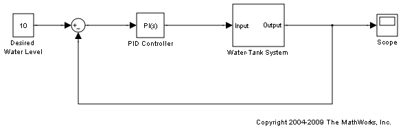
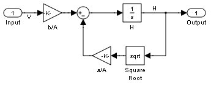
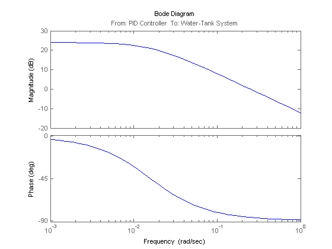

Simulink モデルの平衡化と線形化
Simulink® Control Design™ ソフトウェアで使用可能なコマンド ライン ツールを使用すると、モデルを線形化するための入出力点をプログラムで指定できます。また、線形化のための (平衡化) 操作点を抽出および指定する、新しいコマンド ライン ツールも用意されています。このデモでは、貯水槽フィードバック制御システムを線形化するという形で、これらのコマンドの一部を紹介します。貯水槽の開ループ線形化モデルは、水位 (H) が 10 である操作点において抽出されます。以下の 3 つの手順で、貯水槽モデルの線形化と解析を行います。
目次
モデルを開きます。
watertank 
手順 1: 線形化ポイントの設定
線形化ポイントは、線形化モデルの入出力を指定します。開ループ線形化モデルを抽出するには、Controller ブロックの出力において入力点を追加し、Water-Tank System ブロックの出力において出力点をループ開始点と共に追加します。
入力点を指定します。
watertank_io(1)=linio('watertank/PID Controller',1,'in');
出力点をループ開始点と共に指定します。
watertank_io(2)=linio('watertank/Water-Tank System',1,'out','on');
次に、モデルで線形化ポイントを設定し、表示することができます。
setlinio('watertank',watertank_io);
watertank
手順 2: 操作点の計算と指定
この手順では、貯水槽の水位 (H) が 10 になるような、Simulink モデル [watertank] の操作点を見つけます。このための方法として、モデルのシミュレーションを実行し、シミュレーションが望ましい値に近くなったら操作点を抽出するというものがあります。コマンド FINDOP はモデルのシミュレーションを実行し、場合によっては、関数呼び出しで定義された操作点を抽出します。
opsim = findop('watertank',10)
Operating Point for the Model watertank.
(Time-Varying Components Evaluated at time t=10)
States:
----------
(1.) watertank/PID Controller/Integrator
x: 1.69
(2.) watertank/Water-Tank System/H
x: 10.1
Inputs: None
----------
この操作点では、H の値は望ましい値 10 ではありません。ただし、この操作点を使用して H = 10 となるような操作点を見つけるための検索を初期化できます。操作点の仕様オブジェクトを使用すると、H = 10 という望ましい値を指定できます。
操作点の仕様オブジェクトを作成します。
opspec = operspec('watertank');
操作点 opsim の状態の値で操作点仕様の状態の値を初期化します。
opspec = initopspec(opspec,opsim);
次に FINDOP コマンドを使用して、指定された操作点を検索 (平衡化) できます。
opss = findop('watertank',opspec);
Operating Point Search Report:
---------------------------------
Operating Report for the Model watertank.
(Time-Varying Components Evaluated at time t=0)
Operating point specifications were successfully met.
States:
----------
(1.) watertank/PID Controller/Integrator
x: 1.26 dx: 0 (0)
(2.) watertank/Water-Tank System/H
x: 10 dx: -1.1e-014 (0)
Inputs: None
----------
Outputs: None
----------
手順 3: モデルの線形化と解析
これで、LINEARIZE 関数を使用してプラント モデルを線形化する準備が整いました。
sys = linearize('watertank',opss,watertank_io);
最終的なモデルは、Control System Toolbox™ ソフトウェアの任意のツールを使用して分析できる状態空間オブジェクトです。
bode(sys);
Simulink モデルを閉じます。
bdclose('watertank')